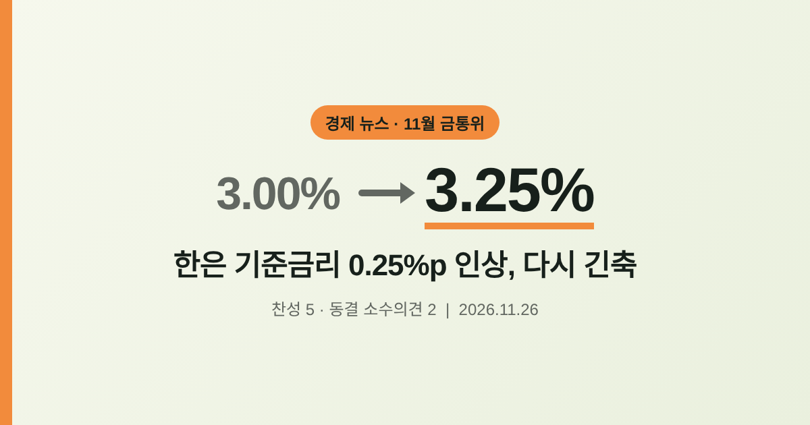
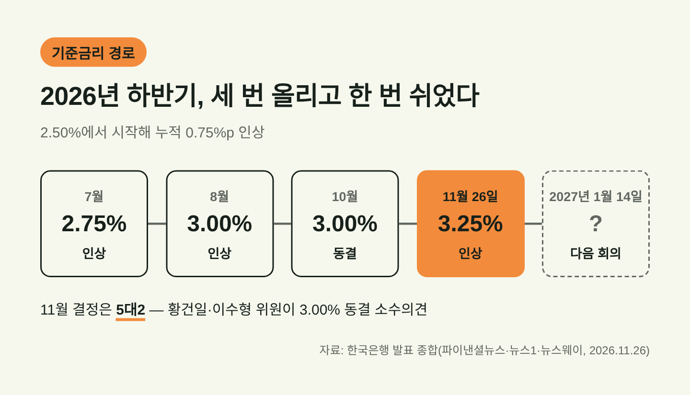
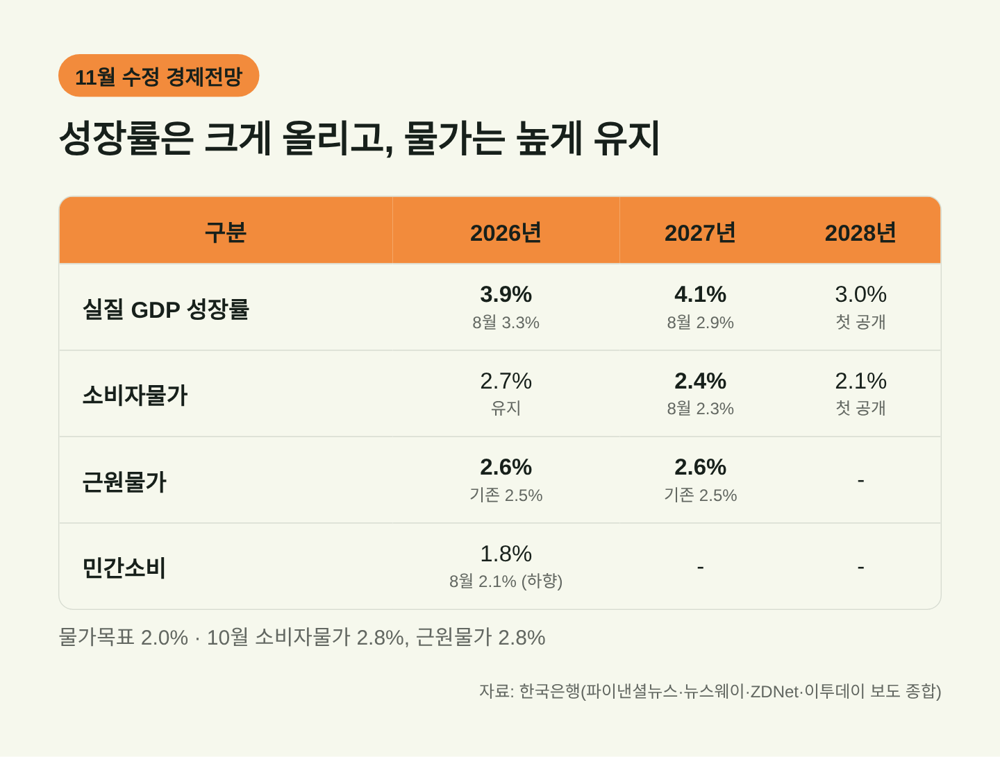
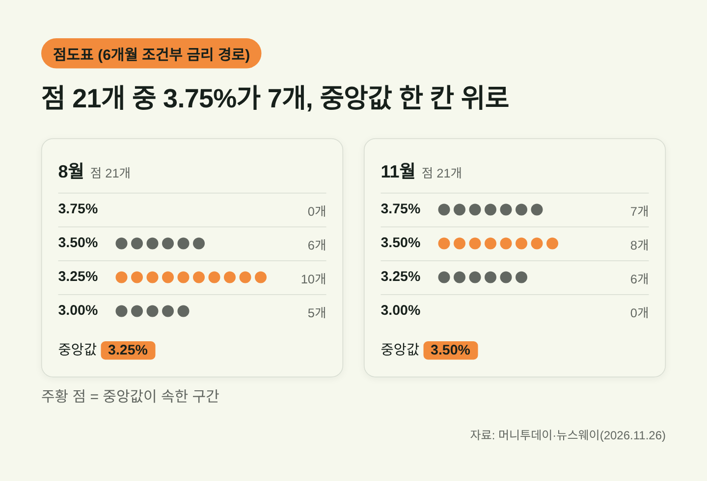
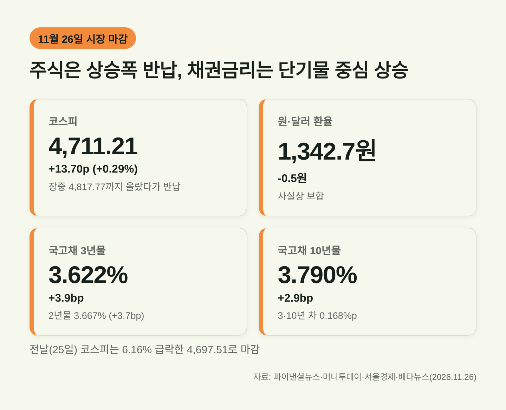
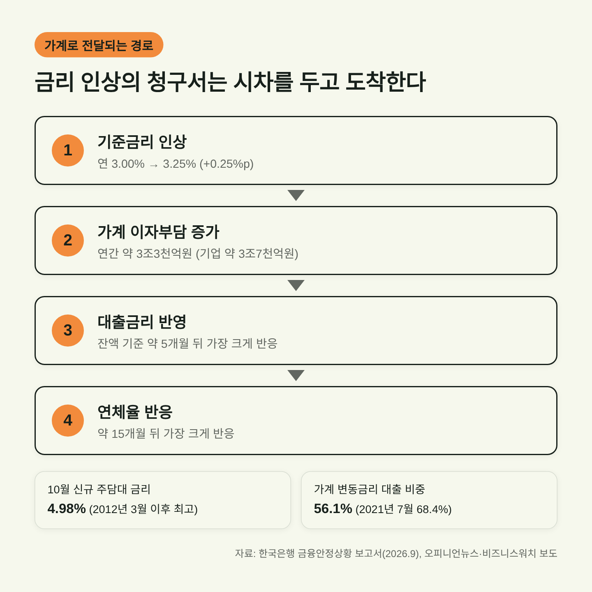
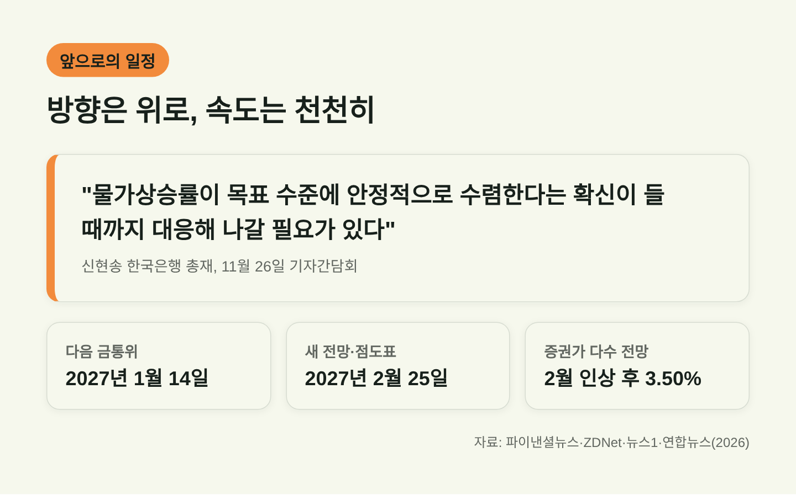

한은 기준금리 3.25% 인상, 소수의견 2명에도 다시 긴축 택한 이유

이번 글에서는 11월 26일 한국은행 금융통화위원회의 기준금리 3.25% 인상 결정을 정리해 보겠습니다. 결론부터 말씀드리면, 한은은 '강한 성장과 끈질긴 물가'를 이유로 긴축을 이어갔습니다. 다만 동결 소수의견이 2명으로 늘고 '속도'라는 표현이 빠지면서, 앞으로는 더 천천히 올리겠다는 신호도 함께 남겼습니다.
■ 무슨 일이 있었나: 3.00%에서 3.25%로
한국은행 금통위는 26일 기준금리를 연 3.00%에서 3.25%로 0.25%p 올렸습니다. 올해 들어 세 번째 인상입니다. 7월과 8월에 연달아 올린 뒤 10월에는 쉬어 갔고, 한 달 만에 다시 움직였습니다. 하반기에만 2.50%에서 3.25%로 0.75%p가 오른 셈입니다. 3.25%는 2024년 11월 이후 약 2년 만에 가장 높은 수준입니다.
시장의 예상을 벗어난 결정은 아니었습니다. 이투데이가 설문한 거시경제 전문가 14명은 모두 인상을 점쳤습니다. 금융투자협회가 채권 전문가 100명에게 물었을 때도 54%가 인상을 예상했습니다.
표결은 5대2였습니다. 황건일·이수형 위원이 3.00% 동결을 주장하는 소수의견을 냈습니다. 황건일 위원은 지난 8월 인상 때도 동결 의견을 냈던 인물입니다. 인상에 반대한 목소리가 한 명에서 두 명으로 늘어난 것입니다.

■ 왜 올렸나: 3.9% 성장과 2%를 웃도는 물가
한은이 내놓은 수정 경제전망을 보면 결정의 배경이 선명해집니다. 올해 성장률 전망은 8월의 3.3%에서 3.9%로 0.6%p 올랐습니다. 내년 전망은 2.9%에서 4.1%로 1.2%p나 뛰었습니다. 처음 공개한 2028년 전망치는 3.0%입니다.
1년 전과 비교하면 변화가 더 크게 느껴집니다. 예전엔 올해 성장률을 1.8%로 내다봤습니다. 지금은 3.9%입니다. 반도체가 이끈 수출과 투자가 그만큼 강했다는 뜻입니다. 올해 누적 수출은 11월 19일까지 이미 1조 달러를 넘겼고, 1~3분기 경상수지 흑자는 3,406억6천만 달러에 이릅니다.
물가는 쉽게 내려오지 않고 있습니다. 10월 소비자물가 상승률은 2.8%, 식료품과 에너지를 뺀 근원물가도 2.8%였습니다. 목표치 2.0%보다 0.8%p 높은 근원물가가 석 달째 이어지고 있습니다. 한은은 올해 물가 전망 2.7%는 유지했지만, 내년은 2.3%에서 2.4%로 올렸습니다. 근원물가 전망도 올해와 내년 모두 2.5%에서 2.6%로 높였습니다.
통화정책방향 의결문에는 물가가 "상당기간 목표 수준을 상회하는 오름세를 나타낼 것"이라는 문장이 들어갔습니다(아주경제 전문). 2028년(2.1%)이 돼서야 목표에 가까워진다는 것이 한은의 계산입니다.

■ 총재의 메시지: "확신이 들 때까지"
신현송 총재는 기자간담회에서 인상의 성격을 두 갈래로 설명했습니다. "선제 대응이기도 하고, 지금 가시화된 물가 상승세에 대응하는 결정"이라는 것입니다(뉴스웨이). 앞으로의 방향에 대해서는 "물가상승률이 목표 수준에 안정적으로 수렴한다는 확신이 들 때까지 대응해 나갈 필요가 있다"고 말했습니다(파이낸셜뉴스·ZDNet).
성장과 정책의 관계도 짚었습니다. 성장이 강하면 통화정책도 그에 맞게 운영한다는 취지입니다. 경기가 좋은데 금리를 낮게 두면 물가와 자산 가격을 자극할 수 있다는 판단으로 읽힙니다.
점도표에 대해서는 "나온 그대로 해석하면 된다"고 했습니다. 금통위원들이 향후 6개월의 조건부 금리 경로를 점으로 찍은 이 자료가 이번에는 꽤 매파적이었습니다.
■ 숨은 신호 두 가지: 매파 점도표와 사라진 '속도'
이번 결정은 겉으로 보면 긴축이지만, 속을 들여다보면 두 신호가 엇갈립니다.
첫째는 점도표입니다. 점 21개 가운데 3.75%가 7개, 3.50%가 8개, 3.25%가 6개였습니다. 중앙값은 3.50%로, 8월의 3.25%에서 한 칸 올라갔습니다. 8월에는 가장 높은 점이 3.50%였는데, 이번엔 3.75% 점이 7개나 새로 등장했습니다. 적어도 한 번은 더 올릴 수 있다는 뜻으로 해석됩니다.
둘째는 의결문의 문구 변화입니다. 10월 의결문에는 "추가 인상의 시기와 속도"라는 표현이 있었습니다. 이번에는 "추가 인상의 시기 등"으로 바뀌며 '속도'가 빠졌습니다(뉴스1·베타뉴스). 시장은 이를 서두르지 않겠다는 신호, 즉 완만한 인상 시사로 받아들였습니다.
정리하면 방향은 위쪽이되 걸음은 느려질 수 있다는 메시지입니다. 소수의견이 2명으로 늘어난 것도 같은 맥락에서 볼 수 있습니다.

■ 시장은 어떻게 반응했나: 코스피 상승폭 반납, 채권금리 상승
금리 결정이 나온 26일, 금융시장은 차분하면서도 예민하게 움직였습니다.
코스피는 전날 6.16%(308.52포인트) 급락해 4,697.51로 마감한 상태였습니다. 26일에는 반등 매수가 들어오며 장중 4,817.77(+2.56%)까지 올랐습니다. 그러나 금리 인상 발표 뒤 오름폭이 줄었고, 결국 13.70포인트(0.29%) 오른 4,711.21에 마감했습니다. 개인이 약 1조원을 순매도했고, 기관은 7천억원대를 사들였습니다. 외국인은 오전에 사다가 장 막판 1천억원대 순매도로 돌아섰습니다. 거래대금은 약 12조원으로 전날보다 3분의 1가량 줄었습니다.
채권시장은 점도표에 먼저 반응했습니다. 국고채 3년물 금리는 3.9bp 오른 연 3.622%, 2년물은 3.7bp 오른 3.667%였습니다. 10년물은 2.9bp 오른 3.790%로, 단기물 오름폭이 더 컸습니다. 3년물과 10년물의 금리 차이는 0.168%p로 좁혀졌습니다. 추가 인상 가능성이 짧은 만기 금리를 끌어올린 결과로 풀이됩니다.
원·달러 환율은 0.5원 내린 1,342.7원으로 사실상 보합이었습니다. 한은도 의결문에서 환율 평가를 '대체로 안정세'로 적었습니다. 월평균 환율이 9월 1,359원에서 10월 1,337.7원으로 내려온 만큼, 이번에는 환율이 금리 결정의 큰 변수는 아니었던 것으로 보입니다.

■ 배경과 쟁점: 성장의 온기는 가계까지 닿았나
이번 결정을 둘러싼 가장 큰 쟁점은 성장의 체감 온도입니다.
숫자로 보면 경제는 뜨겁습니다. 하지만 한은은 올해 민간소비 성장률 전망을 2.1%에서 1.8%로 오히려 낮췄습니다. 총재는 주가 하락의 영향을 이유로 들었습니다. 반도체 기업 이익이 700조원에 육박하지만 그 돈이 가계로 흘러가는 경로는 아직 강하지 않다는 평가도 나왔습니다. 이투데이는 올해 국민소득의 가계 대 기업 배분이 약 40대 60으로 기업 쪽에 쏠릴 것으로 전했습니다.
금융안정 측면의 부담도 있습니다. 10월 은행 가계대출은 5조원 늘어 잔액이 처음으로 1,200조원을 넘었습니다(1,203조9천억원). 전 금융권으로 넓히면 한 달 새 6조4천억원이 증가했습니다. 의결문은 "수도권 주택시장 및 가계부채와 관련한 금융불균형 위험"에 계속 유의하겠다고 밝혔습니다. 서울 아파트값 오름폭은 11월 셋째 주 0.03%로 둔화했지만, 가격 상승 기대는 여전히 높다는 것이 한은의 진단입니다.
미국과의 금리 차이도 변수입니다. 미국 연준의 정책금리는 3.75~4.00%입니다. 이번 인상으로 상단 기준 한미 금리차는 1.00%p에서 0.75%p로 줄었습니다. 연준이 12월 회의에서 금리를 올릴 확률은 90%를 웃도는 것으로 시장에 반영돼 있습니다. 그렇게 되면 금리차는 다시 1.00%p로 벌어집니다.
동결을 주장한 위원들의 우려는 이 지점에서 이해할 수 있습니다. 코스피가 하루 6% 넘게 흔들리고 소비 전망이 내려가는 국면에서 서둘러 조이면, 성장의 온기가 가계에 닿기 전에 식을 수 있다는 걱정입니다. 반면 인상을 택한 다수는 물가와 가계부채가 더 커지기 전에 먼저 움직이는 편이 낫다고 판단했습니다. 어느 쪽도 틀렸다고 단정하기는 어렵습니다.
■ 가계에는 어떤 영향이 오나
대출을 가진 가계에는 부담이 커지는 방향입니다. 한은 9월 금융안정상황 보고서는 기준금리가 0.25%p 오르면 가계 이자 부담이 연간 약 3조3천억원 늘어난다고 추정했습니다. 기업의 이자 부담 증가분은 약 3조7천억원입니다.
대출금리는 이미 높은 편입니다. 10월 은행 신규 주택담보대출 금리는 4.98%로 2012년 3월 이후 가장 높았습니다. 가계대출 전체 평균은 5.02%로 2년 11개월 만에 5%대에 올라섰습니다. 변동금리 주담대의 기준이 되는 신규 코픽스도 10월 3.62%로 2년 8개월 만에 최고였습니다.
부담이 언제 체감되는지도 중요합니다. 한은 분석에 따르면 잔액 기준 대출금리는 기준금리 변경 후 약 5개월, 연체율은 약 15개월 뒤에 가장 크게 반응합니다. 7월부터 이어진 인상의 영향은 이제부터 본격적으로 나타날 수 있다는 뜻입니다. 취약차주와 중소기업에는 9개월 전후에 충격이 몰릴 수 있다는 경고도 있었습니다.
다행인 점도 있습니다. 가계 변동금리 대출 비중은 2021년 7월 말 68.4%에서 2026년 6월 말 56.1%로 낮아졌습니다. 취약차주 비중도 6~7% 수준으로 관리되고 있습니다. 다만 6월 말 취약차주 연체율은 10.39%로, 부담이 한쪽에 몰려 있다는 점은 기억해 둘 만합니다.
대출금리가 0.25%p 오른다고 단순 가정하면, 잔액 1억원당 연 25만원, 월 2만원 남짓의 이자가 늘어납니다(위키트리 계산). 실제 변화는 금리 재산정 주기와 상환 방식에 따라 달라집니다. 본인 대출의 금리 유형과 다음 변동 시점을 한 번 확인해 두시길 권합니다.

■ 앞으로의 전망: 1월 14일, 그리고 2월
다음 통화정책방향 결정회의는 2027년 1월 14일입니다. 다만 증권가의 시선은 2월에 더 쏠려 있습니다. 2월 25일 회의에서 새 경제전망과 점도표가 함께 나오기 때문입니다.
연합뉴스가 정리한 7개 증권사 리포트를 보면, 대부분 2월에 0.25%p 더 올려 3.50%에서 멈출 것으로 봅니다. JP모건은 2월과 5월 두 차례 올려 3.75%까지 갈 수 있다고 전망했습니다. 반대로 스테이트스트리트는 3.25%에서 멈출 가능성을 열어 두었습니다. 하나증권은 3.50%를 넘기면 과잉 긴축 위험이 있다고 지적했습니다. 한화투자증권은 반도체 호황의 내수 파급이 약해 성장률 전망이 다시 낮아질 수 있다고 봤습니다.

결국 관전 포인트는 세 가지로 좁혀집니다. 첫째, 근원물가가 2%대 중반 아래로 내려오는지입니다. 둘째, 12월 연준의 결정과 그에 따른 환율 흐름입니다. 셋째, 증시 조정이 소비를 얼마나 더 위축시키는지입니다.
정리하면 이렇습니다. 한은은 숫자로 확인된 성장과 물가에 맞춰 금리를 올렸고, 다음 걸음은 서두르지 않겠다는 여지를 남겼습니다. "방향은 위로, 속도는 천천히" — 이번 금통위를 한 줄로 줄이면 이 정도일 것입니다. 1월과 2월의 회의가 이 해석을 확인해 줄지, 차분히 지켜볼 일입니다.
이 글은 정보 제공 목적이며 투자 권유가 아닙니다. 투자 판단과 그에 따른 책임은 본인에게 있습니다.
참고자료
- 파이낸셜뉴스, "한은 '다시 긴축' 기준금리 3.25%로…성장률 올해 3.9%, 내년 4.1%로 대폭 상향", 2026-11-26, https://www.fnnews.com/news/202611261002322163
- 이투데이, "[속보] 다시 쏜 긴축 신호탄⋯한은, 기준금리 3.25%로 인상", 2026-11-26, https://www.etoday.co.kr/news/view/2652786
- 뉴스1, "금리 올린 한은, '추가 인상 속도' 문구 뺐다…완만한 인상 시사", 2026-11-26, https://www.news1.kr/economy/trend/6366790
- 베타뉴스, "한은, 기준금리 3.25%로 인상…동결 소수의견 2명·추가 긴축 신중론", 2026-11-26, https://www.betanews.net/article/view/beta202611260108
- 아주경제, "[전문] 한은, 기준금리 3.25%로 인상…'물가 상당 기간 목표 수준 상회'", 2026-11-26, https://ajunews.com/view/20261126102907668
- 뉴스웨이, "올해 기준금리 3.25%로 마무리···신현송 '2028년에야 물가 목표 근접'", 2026-11-26, https://newsway.co.kr/news/view?ud=2026112615280815068
- ZDNet Korea, "신현송 한은 총재, 추가 금리인상 시사…'물가 안정 확신 들 때까지'", 2026-11-26, https://zdnet.co.kr/view/?no=20261126125222
- 뉴스1, "신현송 '통화정책도 강한 성장에 맞게'…추가 금리 인상 시사(종합)", 2026-11-26, https://www.news1.kr/economy/trend/6366989
- 머니투데이, "금리 인상 날 코스피 상승폭 꺾여…점도표 상단 3.75%에 고점 신중론", 2026-11-26, https://www.mt.co.kr/stock/2026/11/26/2026112615481951655
- 파이낸셜뉴스, "'4800' 찍고 '4700' 마감…반등 코스피, 금리 인상에 뒷심 부족", 2026-11-26, https://www.fnnews.com/news/202611261548115574
- 서울경제, "금리 인상에도 환율 보합…국고채는 매파 점도표에 상승", 2026-11-26, https://www.sedaily.com/article/20119477
- 베타뉴스, "'금리 인상·매파적 점도표' 국고채 금리 대체로 상승...3년물 연 3.622%", 2026-11-26, https://www.betanews.net/article/view/beta202611260142
- 파이낸스투데이, "[속보] 한은, 기준금리 연 3.25%로 0.25%p 인상...한미 금리차 0.75%p로 축소", 2026-11-26, https://www.fntoday.co.kr/news/articleView.html?idxno=400374
- 신아일보, "美 연준, 기준금리 3.75~4.00% 동결…12월 추가 인상 시사", 2026-10-29, https://www.shinailbo.co.kr/news/articleView.html?idxno=5077326
- 비즈니스워치, "한은 '기준금리 0.25%p 인상때 가계 이자부담 3.3조↑'", 2026-09-22, https://news.bizwatch.co.kr/article/finance/2026/09/22/0025
- 일간투데이, "올해만 세 번 올렸다…기준금리 3.25%에 대출자 이자 '비상'", 2026-11-26, https://www.dtoday.co.kr/news/articleView.html?idxno=806466
- 오피니언뉴스, "14년 만에 최고 찍은 주담대 금리…한은 또 인상, 이자부담 어디까지", 2026-11-26, https://www.opinionnews.co.kr/news/articleView.html?idxno=147536
- 위키트리, "두 달 만에 추가 인상…한국은행 기준금리 3.25%, 달라지는 것들", 2026-11-26, https://www.wikitree.co.kr/articles/1177925
- 연합뉴스(서플 게재), "한은 '매파 점도표'에 추가 인상 무게…증권가 '속도는 불확실'(종합)", 2026-11-26, https://supple.kr/news/cmwx7dcidp90vkwp8brougzox
- 연합뉴스(서플 게재), "10월 금융권 가계대출 6.4조↑…주담대 증가·빚투 재개", 2026-11-11, https://supple.kr/news/cmwbjjp81thn8al9ppjavfv93
- 투데이신문, "집값·환율 진정됐지만 물가·가계빚은 '버티기'…한은, 26일 추가 인상 가닥", 2026-11-25, https://www.ntoday.co.kr/news/articleView.html?idxno=131087
- 이투데이, "성장률 뛰는데 팍팍한 살림⋯서민 덮친 고금리", 2026-11-26, https://etoday.co.kr/news/view/2653547
- 뉴스1, "내년 첫 기준금리 결정 1월 14일…한은 금통위 연 8회 개최", 2026-10-29, https://www.news1.kr/economy/trend/6336861